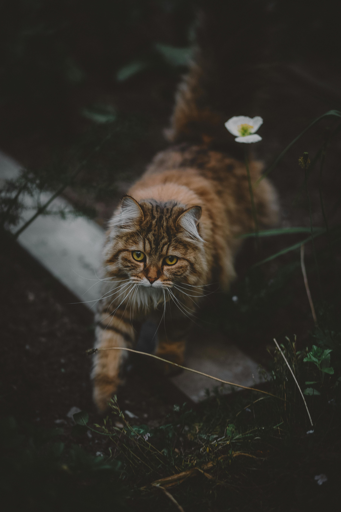
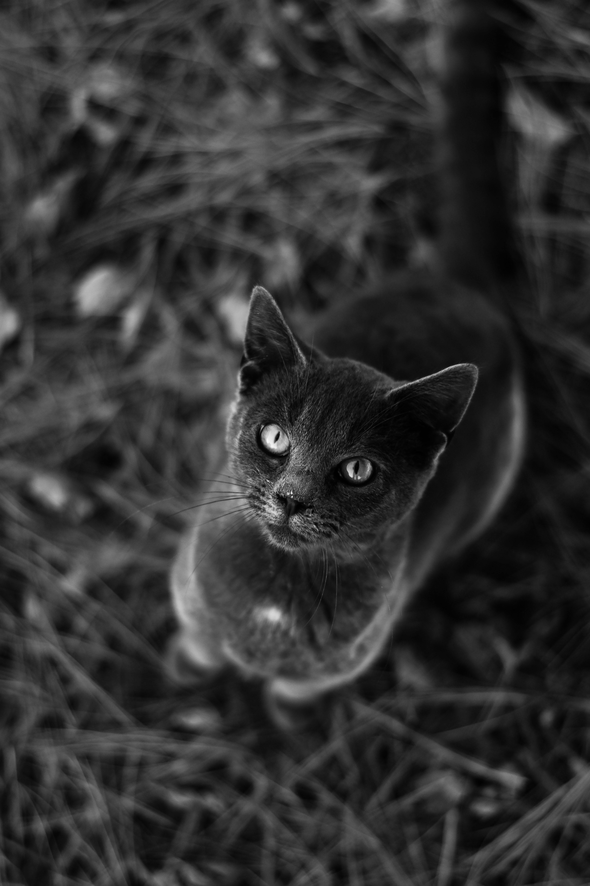
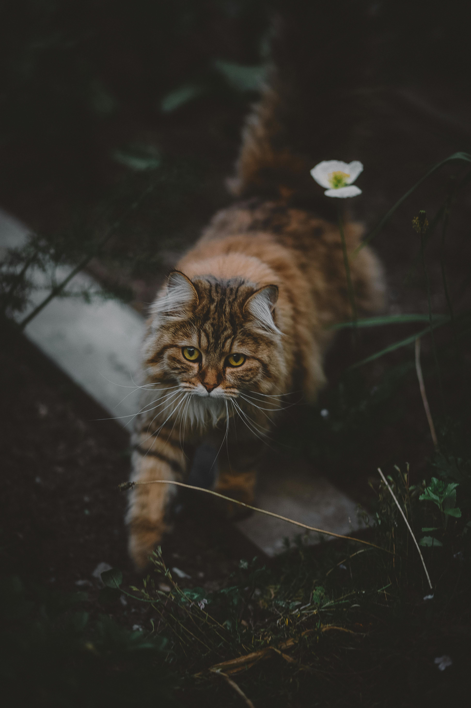
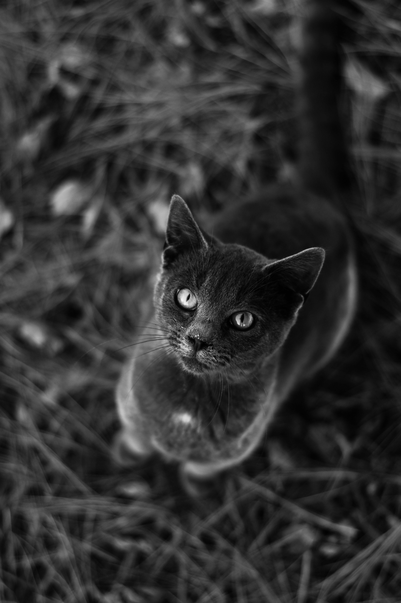
 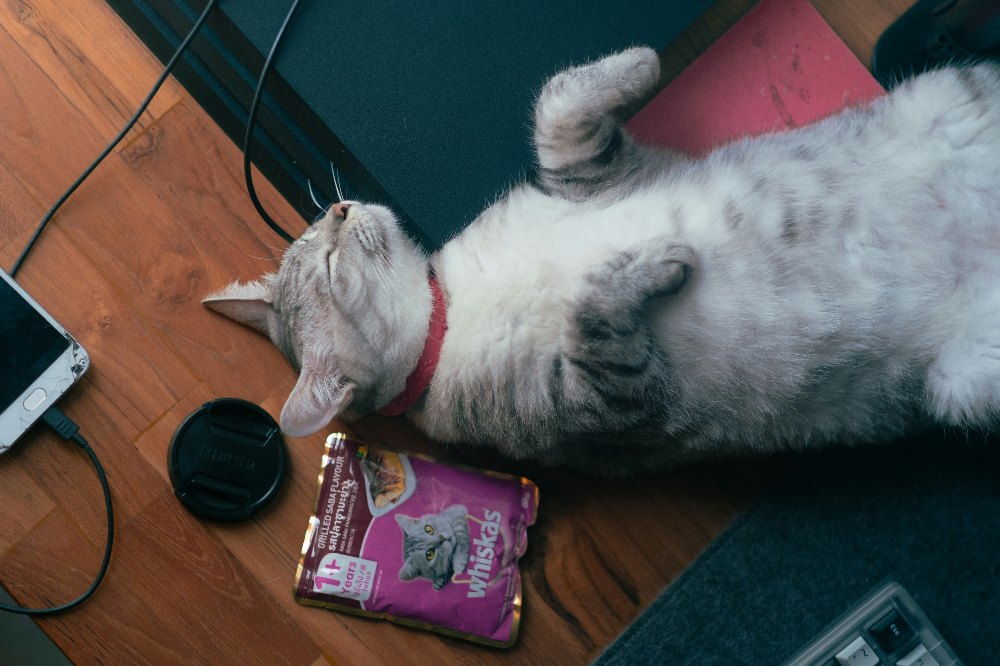
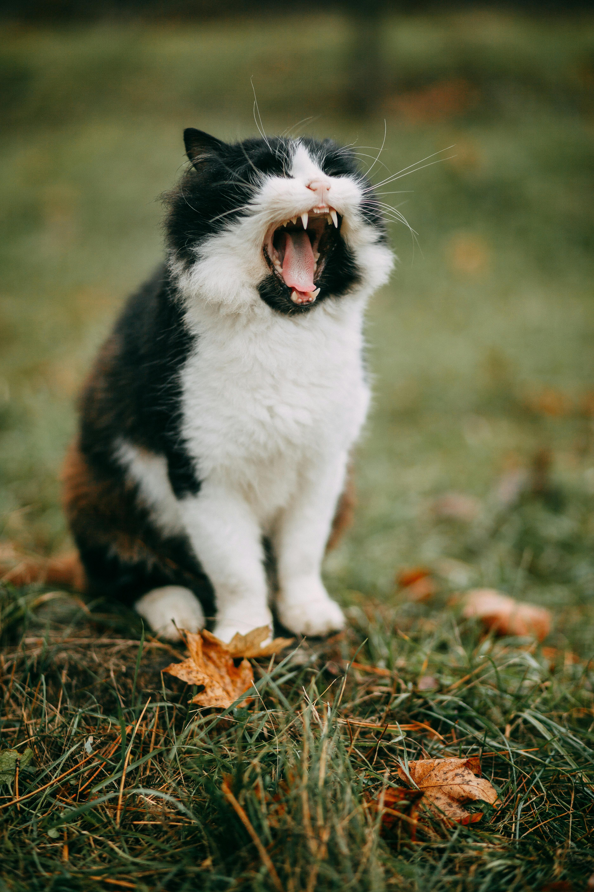
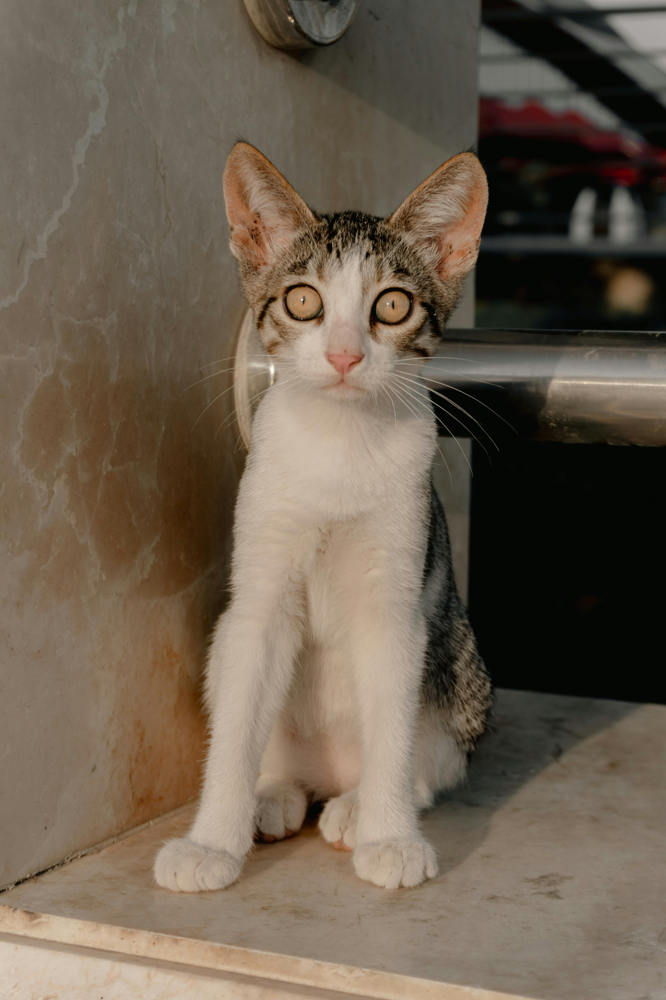
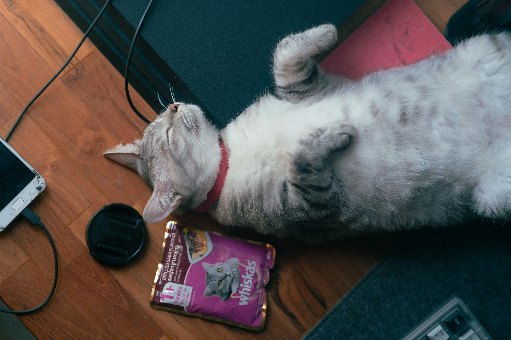
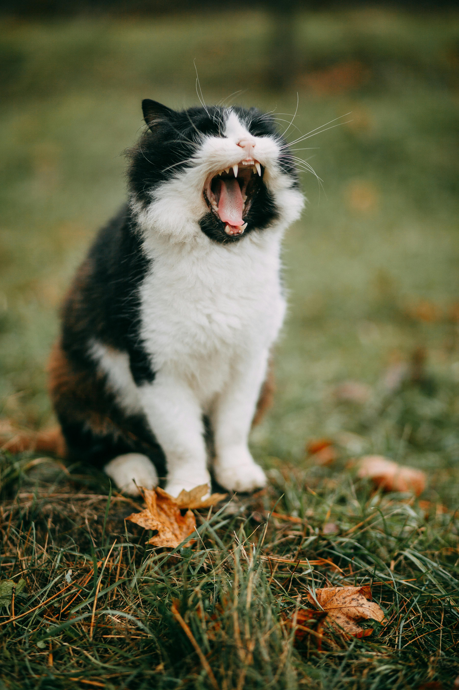
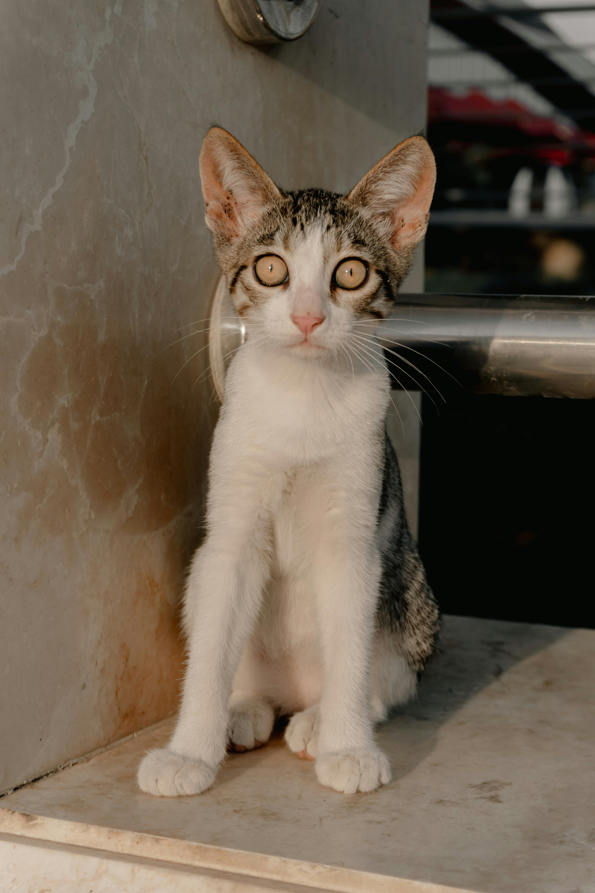
@Cheng
The Persian cat, also known as the Persian Longhair or simply Persian, is a long-haired traditional breed of cat characterised by a round face and petite, but not flat and not smashed in, muzzle. The short flat nose was created in the US from in-breeding and causes breathing difficulties in the breed, whereas, the traditional Persian breed has a petite nose which enables them to breathe without difficulties. The first documented ancestors of Persian cats might have been imported into Italy from Khorasan as early as around 1620, but this has not been proven. Instead, there is stronger evidence for a longhaired cat breed being exported from Afghanistan and Iran/Persia from the 19th century onwards.[2][3][4] Persian cats have been widely recognised by the North-West European cat fancy since the 19th century,[5] and after World War II by breeders from North America, Australia and New Zealand.[5] Some cat fancier organisations' breed standards subsume the Himalayan and Exotic Shorthair as variants of this breed, while others generally treat them as separate breeds. The selective breeding carried out by breeders has allowed the development of a wide variety of coat colours,[5] but has also led to the creation of increasingly flat-faced Persian cats. Favoured by fanciers, this head structure can bring with it several health problems. As is the case with the Siamese breed, there have been efforts by some breeders to preserve the older type of cat, the Traditional Persian, which has a more pronounced muzzle. Hereditary polycystic kidney disease (PKD) is prevalent in the breed, affecting almost half of the population in some countries.[6][7] In 2021, Persian cats were ranked as the fourth-most popular cat breed in the world according to the Cat Fanciers' Association, an American international cat registry.
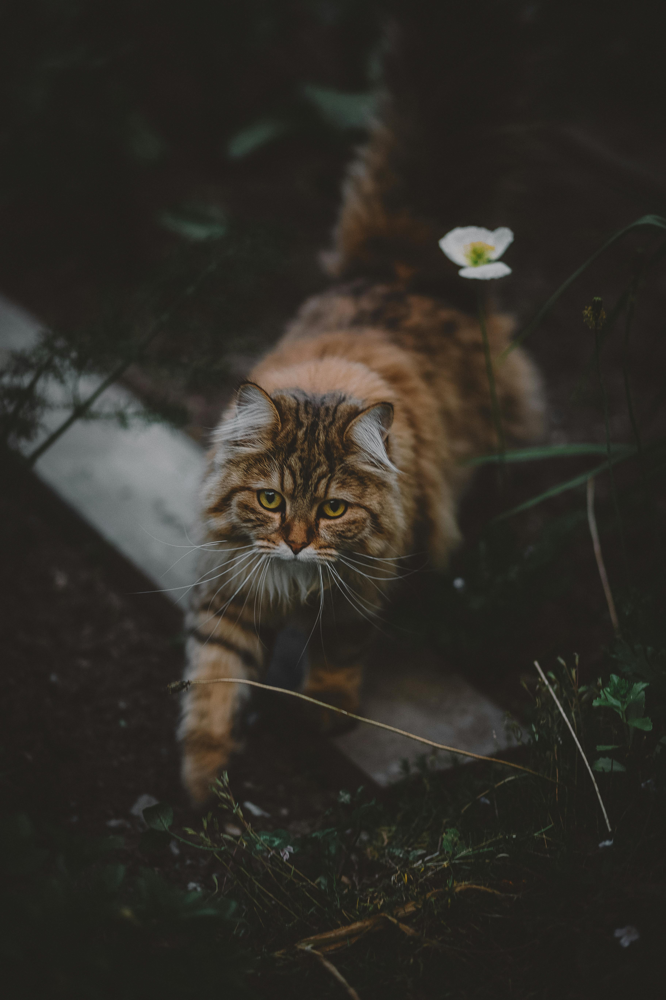
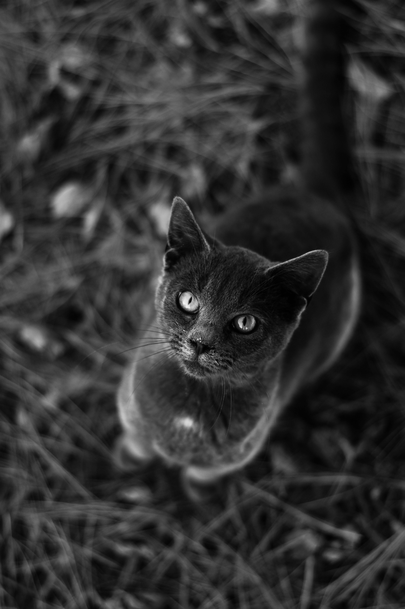
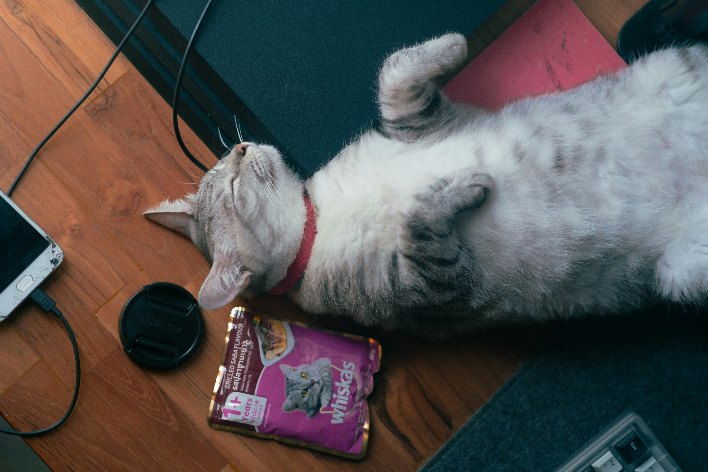
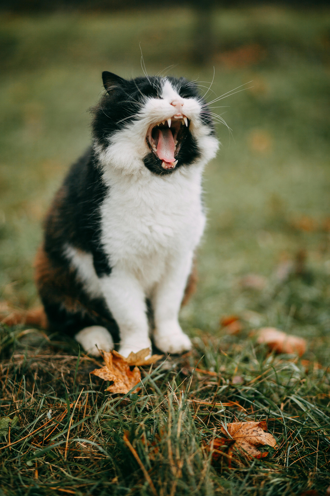
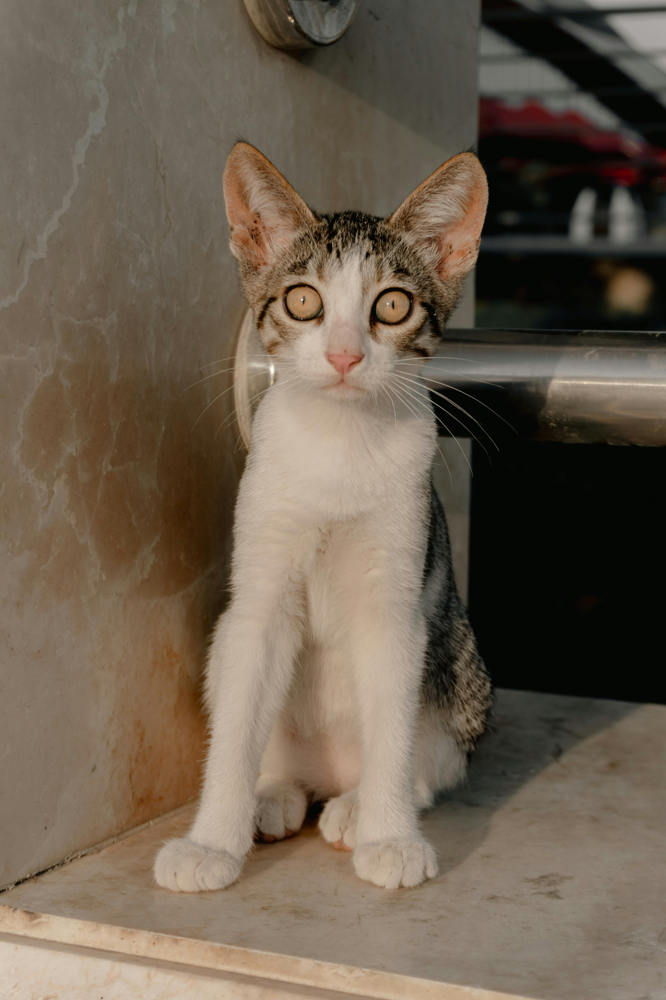